APNS证书创建流程
1 创建iOS App ID, 如果已经存在跳到步骤2
1 登录Apple Developer Center，选择Identifiers下的App IDs，点击添加:
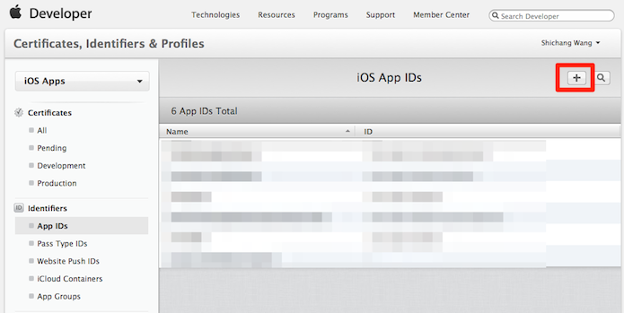
2 填写App ID Description:
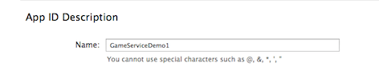
3 填写bundle ID:
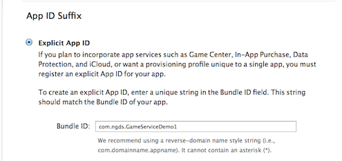
4 选中Push Notification, 点击继续:
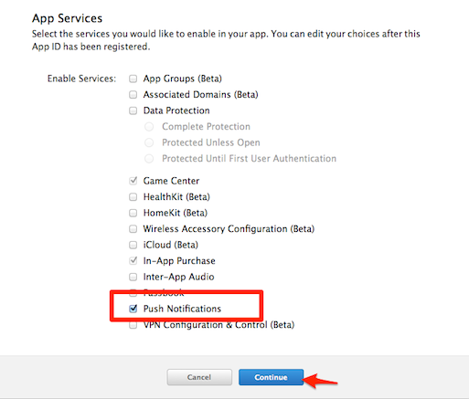
5 提交:
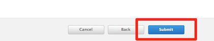
2 创建推送证书
这里以开发证书为例，发布证书步骤相同
6 打开Keychain， 点击菜单"证书助理" -> "从证书颁发机构请求证书"...:
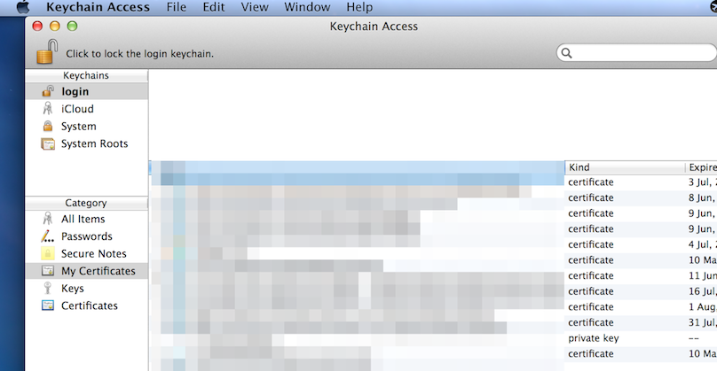 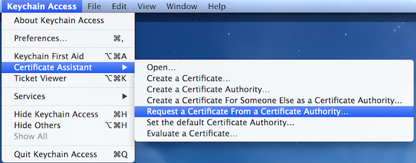
7 填写邮箱，常用名称，选择保存到磁盘，继续:
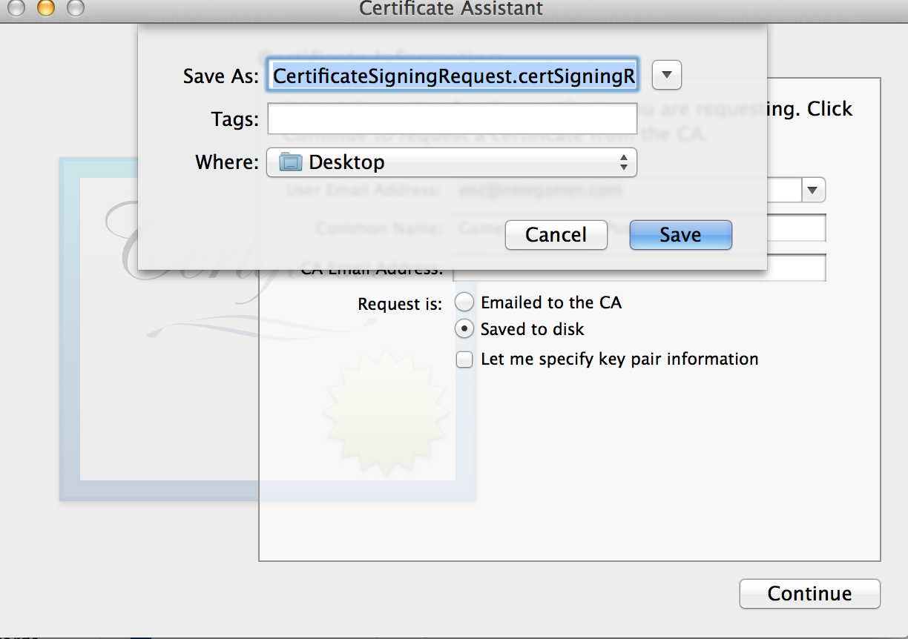
8 回到Apple Developer Center，在App ID列表上点击展开需要创建证书的App ID，点击edit
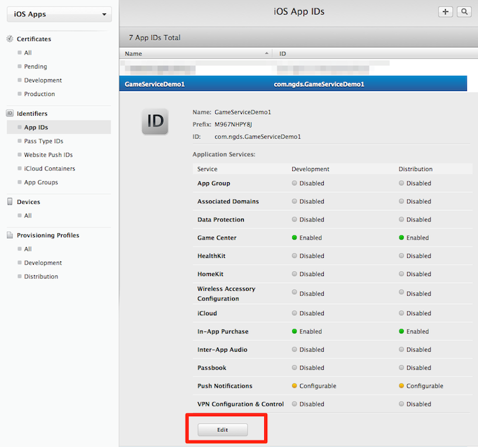
9 点击创建证书:
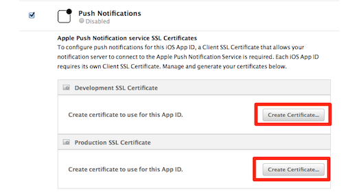
10 点continue继续:
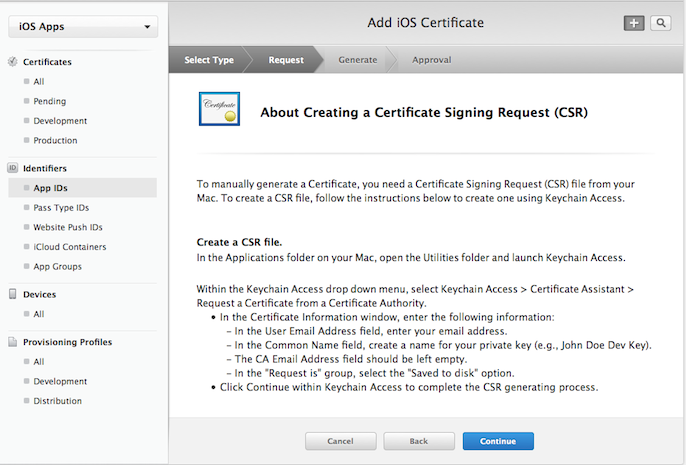
11 选择刚刚创建的certSigningRequest文件:
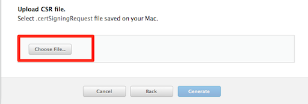
12 点击"Generate"生成:
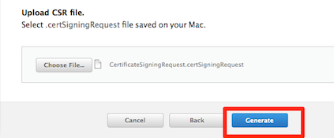
13 下载生成的证书，并双击安装:
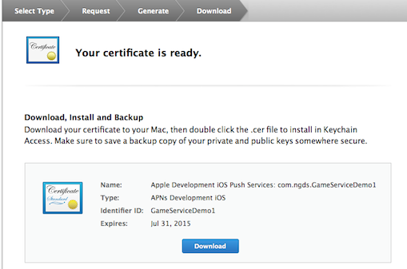
14 打开keychain，就可以看到生成的证书:
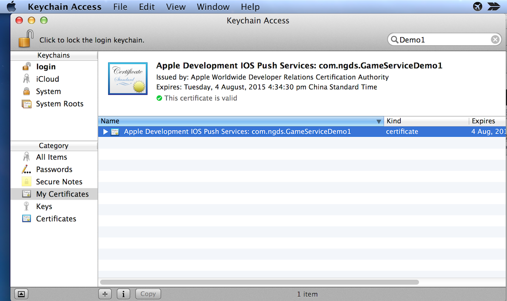
3 导出证书
15 在keychain中，点击安装好的证书，右键弹出菜单：
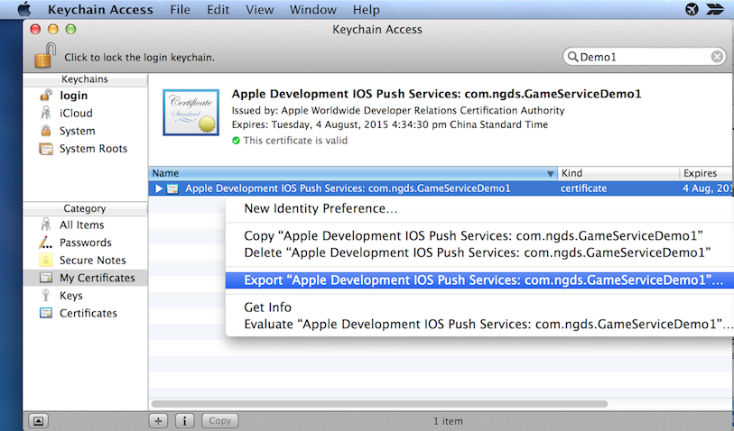
16 点击导出p12文件：
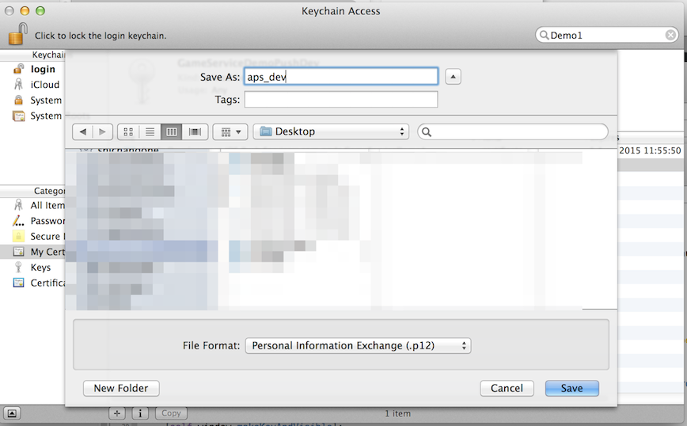